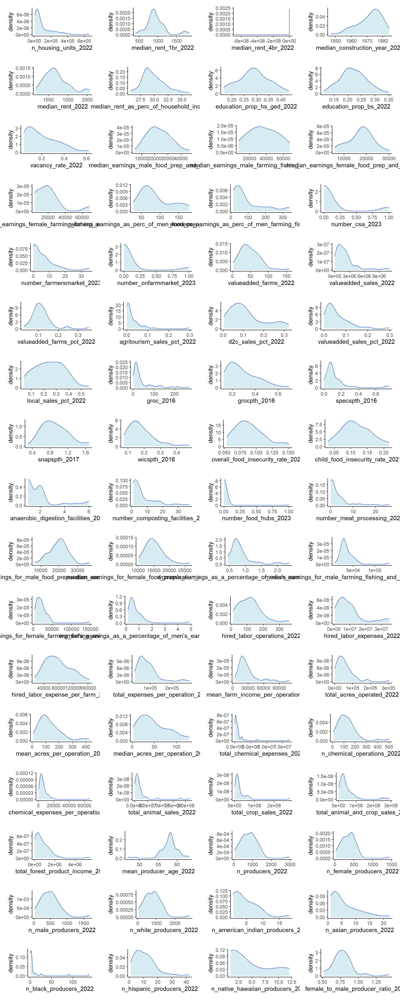

This is a work in progress - all content and analyses are preliminary.
Visualization
Introduction
This is a first pass at making some interactive visualizations with metrics from secondary data.
Time Series
Exploring the metrics that are clean and have 5 or more time points. First let’s clean up data and get it into the right format
Code
pacman::p_load( dplyr, ggplot2, plotly, purrr, RColorBrewer, stringr)dat <-readRDS('data/aggregated_metrics.rds')fips_key <-readRDS('data/fips_key.rds')## Select metrics# Start with variables with >= 5 time pointsts_vars <- dat %>%group_by(variable_name) %>% dplyr::summarize(n_years =length(unique(year))) %>%filter(n_years >=5) %>%pull(variable_name)# Select a subset of themts_vars <-str_subset(ts_vars, 'child|overall|^wic|^women')# Add a clean name for graphsts_vars <-data.frame(variable = ts_vars,yaxis =c('Insecurity Rate','Insecurity Rate','Coverage Rate','Eligibility Rate','Percent','Percent' ),title =c('Child Food Insecurity Rate','Overall Food Insecurity Rate','WIC Coverage Rate','WIC Eligibility Rate','Womens Earnings as % of Men, Farming','Womens Earnings as % of Men, Food Service' ))## Clean data framedat <- dat %>%mutate(across(c(year, value), as.numeric),state =str_sub(fips, end =2), ) %>%left_join(fips_key, by ='fips') %>%mutate(county_name =str_remove(county_name, ' County'))
Now we can plot a series of 6 metrics for which we have data for 5 or more years at the state level. Hover over the joints to see specific values for each state.
Taking an exploratory look at the distributions of our variables at the county level. We are only using the latest years available for each metric. Note that y-axes are indepednent
Code
pacman::p_load( dplyr, purrr, ggplot2, rlang, ggpubr, tidyr)source('dev/data_pipeline_functions.R')dat <-readRDS('data/aggregated_metrics.rds')# get_str(dat)# Get names of all varsvars <- dat$variable_name %>% unique# DF with only final years of all vars, states only, CT governing regionsdat_latest <- dat %>% dplyr::filter(!str_detect(fips, '^09.*[1-9]$'),str_length(fips) ==5 ) %>%get_latest_year() %>%mutate(variable_name =str_sub(variable_name, end =60),variable_name =paste0(variable_name, '_', year), .keep ='unused' ) %>%unique() %>% tidyr::pivot_wider(id_cols = fips,names_from ='variable_name',values_from ='value' ) %>%mutate(across(everything(), as.numeric))# get_str(dat_latest)plots <-map(names(dat_latest)[-1], \(var){ dat_latest %>%ggplot(aes(x =!!sym(var))) +geom_density() +theme_classic()})ggarrange(plotlist = plots,ncol =3,nrow =23)

Distributions of all metrics at the county level.
Bivariate Plots
Taking a look at bivariate scatter plots for a selection fo variables at the county level.